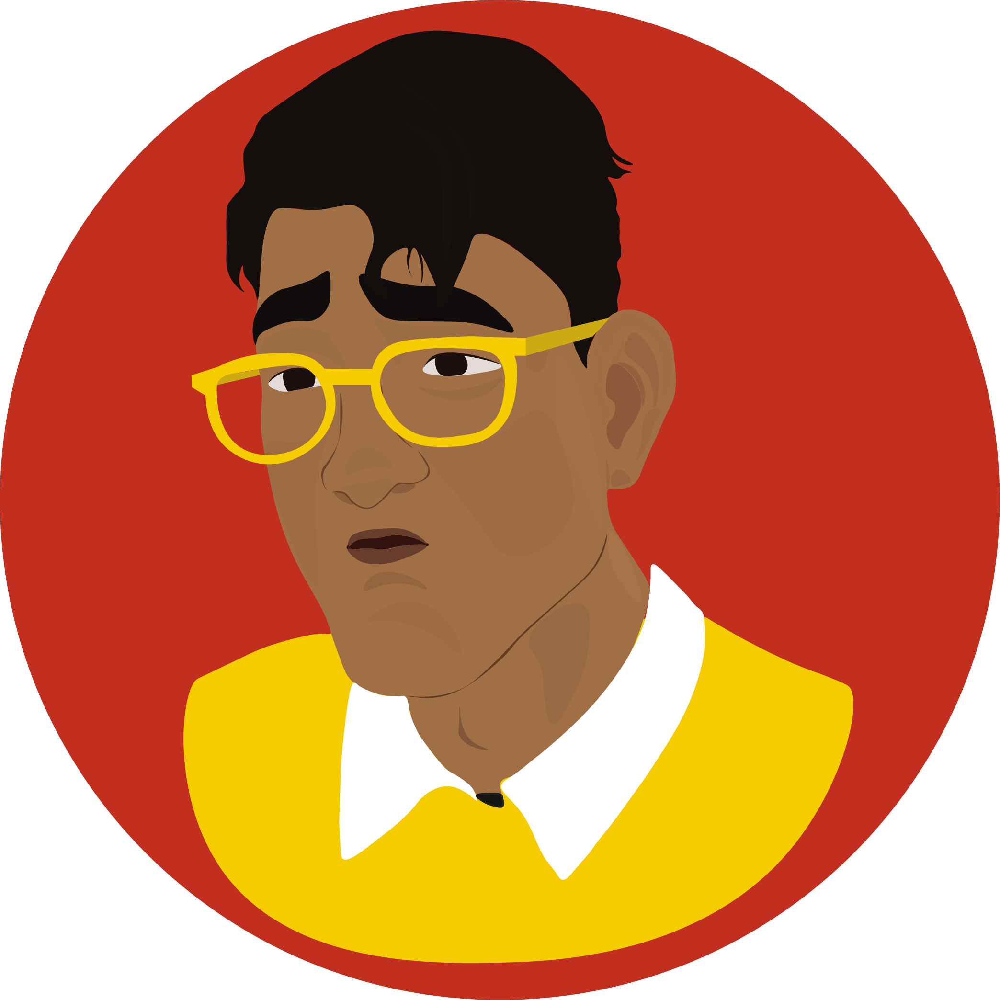
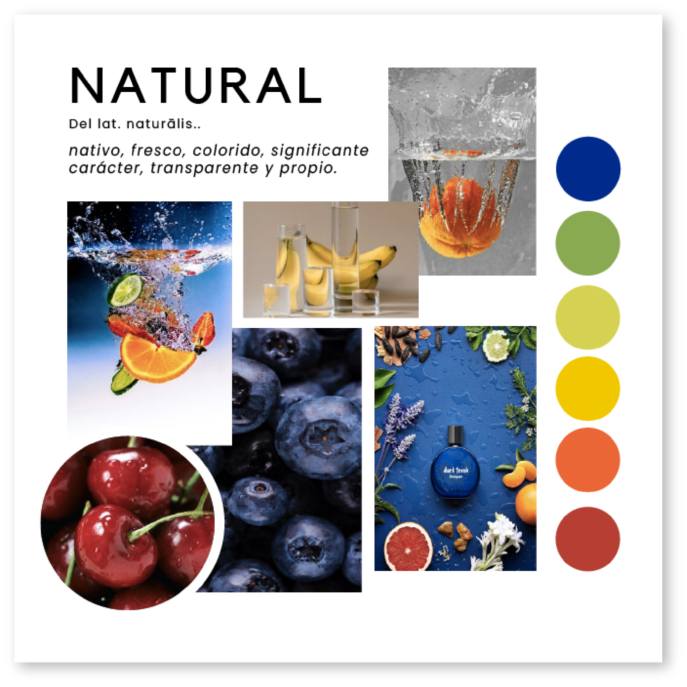
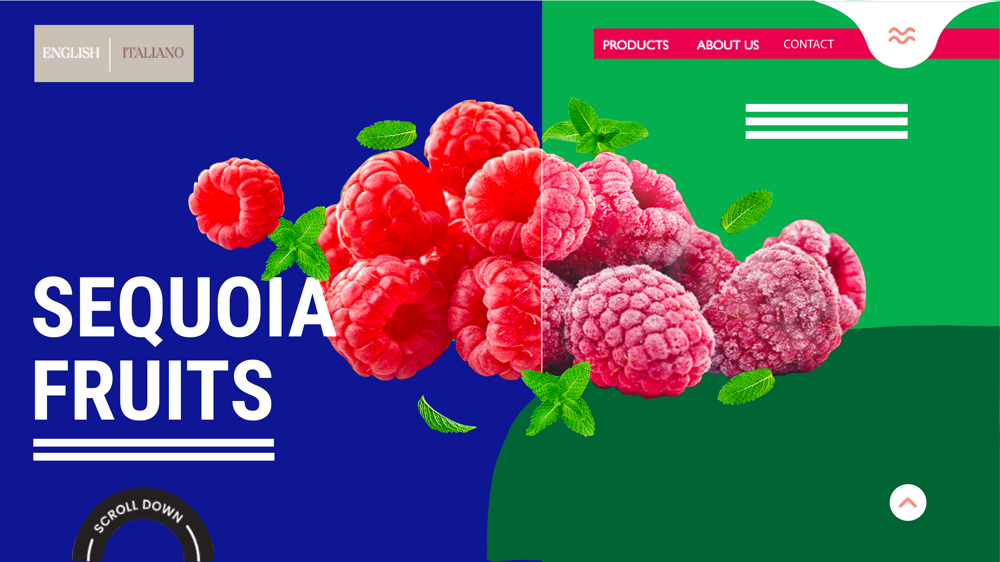

Arquetipos de Usuarios

Zhào "George" Li, 30.
Proveedor chino, viaja en los veranos buscando cerezas para importar a Tianjin. Siempre anda de reunión en reunión en terreno por lo que busca clientes en su celular.
Juan Pablo Miranda, 44.
Agrícola, está siempre en terreno y suele buscar proveedores desde su celular en su camioneta. Aveces usa computador, pero no se relaciona tanto con la tecnología.
Pedro Irarrázaval, 48.
Encargado de generar las alianzas de supermercados Jumbo, trabaja en su oficina por lo que revisa páginas y contacta proveedores desde su computador.
Moodboard de referentes
Boceto de portada: Landscape
Boceto de página interior: Landscape